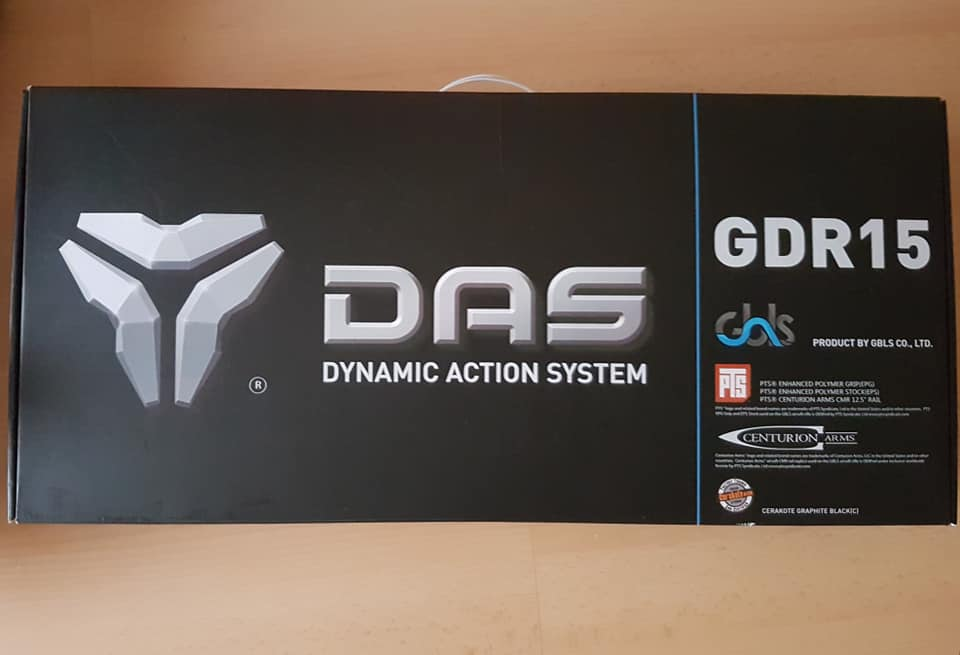
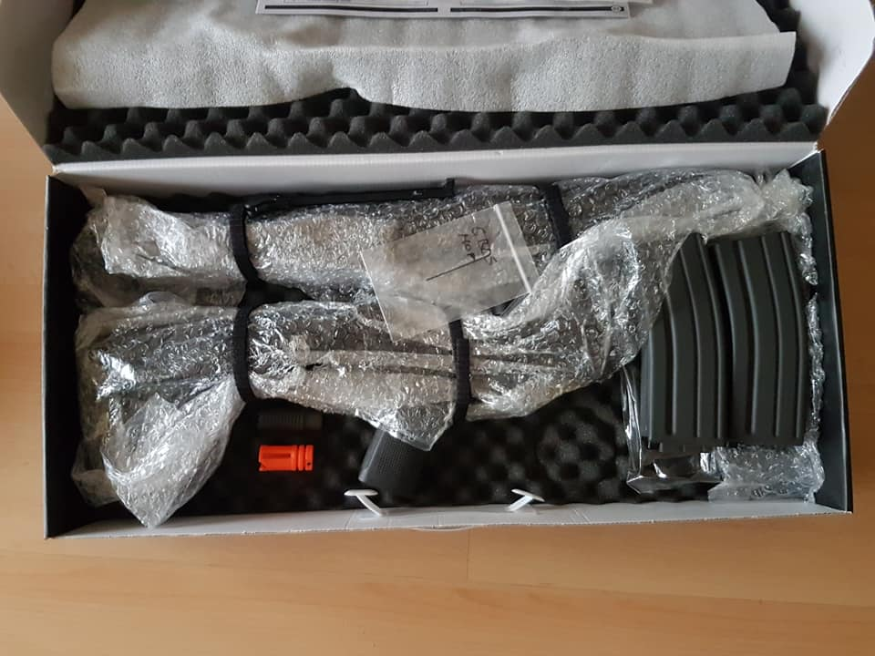
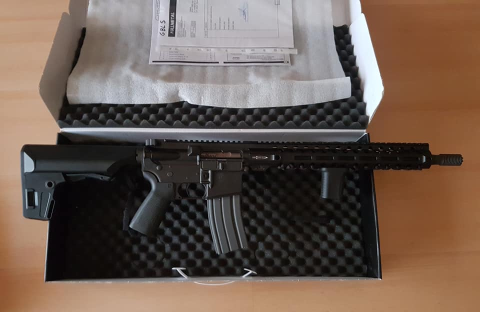
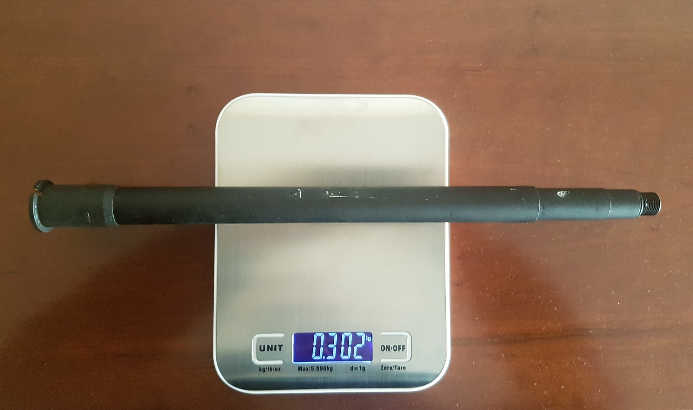
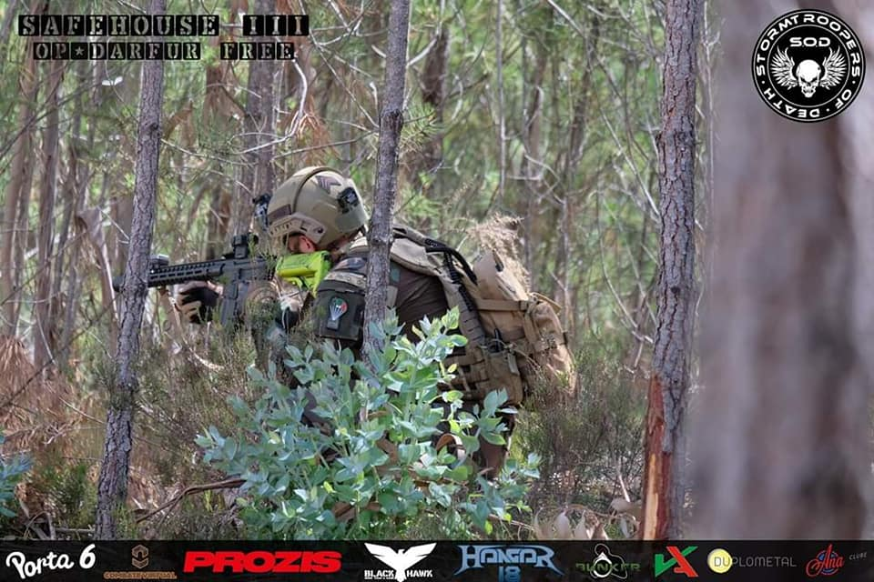
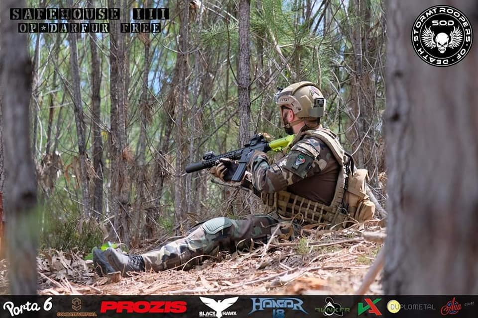
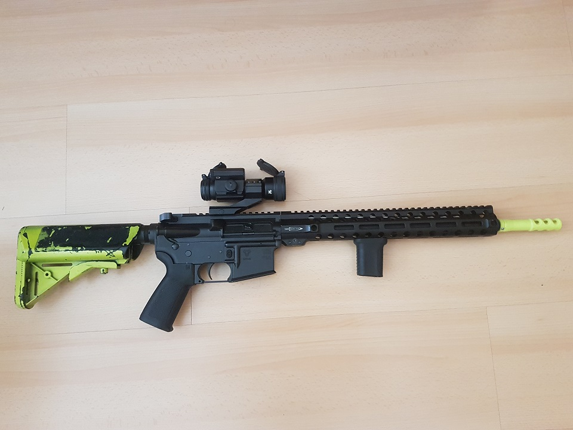
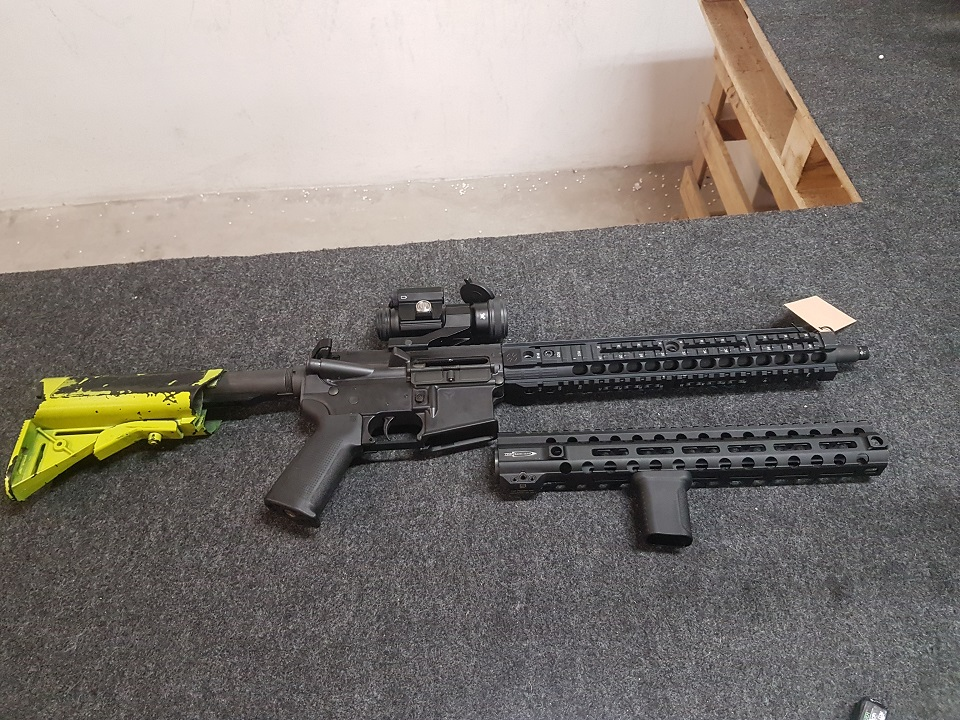
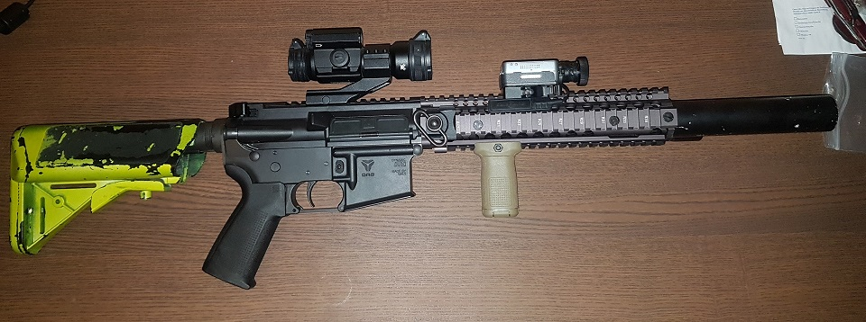

DAS GDR15
"Review"
Após 3 anos de uso da reprodução GBLS DAS GDR-15 segue finalemente a minha Review, muitas das coisas que foram aqui escritas na "Pre-Review" vão se manter e outras vão mudar por isso aconselhor nova leitura, mas não fiquem admirados encontrarem muitos elementos da "Pre-Review" na review final.
{kind=link}

Nestá "Review" vou muitas vezes fazer referencia a outras reproduções nomeadamente a Systema, apesar da mecânica interna e o sistema de funcionamento ser completamente diferente, a nível de preço e o publico alvo a quem a GBLS DAS se direciona é claramente o mesmo, e é considerada uma PTW (Professional Training Weapon).
Vamos então começar pelo inicio, após receber a encomenda abri a caixa com muito entusiasmo, pois finalmente ia desembalar uma possível substituta para a minha PTW (Systema), como já alguns de vocês sabem eu sou principalmente jogador Milsim e ter algo que se assemelhe o mais possível com a realidade é algo que me deixa bastante entusiasmado e do meu interesse.
{kind=link}

{kind=link}

A caixa é impecável a nível visual é muito elegante, sem revelar o conteúdo as únicas indicações são a marca e o nome da reprodução, dentro da caixa vem a parte que nos interessa:
a reprodução, um carregador (magazine), uma chave para ajustar o hop up e um adaptador para carregar as bb's no carregador (magazine), tudo vem devidamente bem protegido e seguro,
a reprodução vem dividia, ou seja o lower e o upper vêm desmontados , algo que não se vê muito mas que tem por vantagem de fazer com que a caixa de origem de transporte seja menos larga e mais fácil de arrumar.
Após desembalar e montar o lower com o upper tal como se faz numa arma ( do tipo Armalite ) real e também numa PTW tive finalmente a reprodução nas mãos e qual foi a minha surpresa ... .
A reprodução é muito : leve... de facto eu tenho a versão comprida e estava a espera de algo pesado e robusto , mas não, pelo contrario tive a sensação de pegar numa AEG e não numa PTW, esse sentimento é derivado a vários componentes da reprodução... .
Primeira impressão da reprodução em mão :
- O Rail/Handguard/Guarda mão (PTS Centurion Arms M-LOK® CMR 13.5" para a versão longa) é bastante ligeiro, provavelmente derivado a ter uma circunferência menor que um típico rail picatinny, que só está disponível neste rail na totalidade
da parte superior (rail's picatinny podem ser acrescentados visto o Rail Centurion Arms ter sistema M-LOK (não incluídos)).
A ausência de rail picatinny nas parte laterais e inferior é que o torna mais fino em circunferência e mais leve também, é de realçar que existem buracos muito práticos para
prender Sling/Bandoleira através de acessórios "quick "detachement sling" (não incluídos) tanto na parte traseira como na parte frontal do rail e em ambos lados
(tanto para destros como esquerdinos), a reprodução vem pintada com uma camada Cerakote de origem, que permite conservar a pintura por mais tempo e evita desgaste prematuro ou acelerado na reprodução.
A qualidade do Alumínio do rail também é um factor que reforça esse sentimento, apesar de parecer de boa qualidade não me dá pessoalmente sentimento de robustez tanto que só pode ser usado em reproduções de Airsoft... .
- O Outer barrel (cano externo) também é relativamente ligeiro comparado com o de uma PTW apesar de ser o da versão longa da Reprodução.
{kind=link}

- Os carregadores, também são muito leves e em nada se comparam com os de uma Systema de origem e são do tipo AEG com relativamente boa qualidade mas construção muito leve, isto derivado ao material de construção .
- Os plásticos usados, de facto apesar de ser tudo da marca PTS :
1- O Punho (PTS Enhanced Polymer Grip para a versão longa e PTS Enhanced Polymer Grip Compact para a versão CQB) que apesar de relativamente boa qualidade e bastante ergonómico são do tipo AEG ou seja "mais largo" que um punho real comum. 2- A Coronha (buttstock) (PTS Enhanced Polymer Stock) tem uma boa ergonomia ou se gosta ou não do estilo, tem a vantagem de permitir vários tipos de formatos de baterias e tem muito espaço de stock-agem para as mesmas. Mas mais uma vez não fiquei nada admirado com a qualidade dos plásticos usados e não tive sensação de componentes reais que tive quando por exemplo peguei a primeira vez na minha Systema .
NB: Para informação uma GBLS DAS GDR-15 versão longa pesa 3 quilos certos, segundo o próprio fabricante (versão curta (CQB) 2,7 quilos).
Uma Systema M4A1 ou seja a versão longa pesa 3.125 quilos (versão curta (CQB) 2.928 quilos) e ambas versões vêm com Handguard/Guarda mão em Polímero (plástico) portanto falta acrescentar o peso de um rail em comparação com a GDR-15.
A GDR-15 apesar de já trazer Handguard/Guarda mão consegue ser mais leve que uma Systema sem Handguard/Guarda mão de origem.
Foi este conjunto de elementos ou seja : Carregador/Magazine, Rail, Outer barrel , Punho e Stock/Coronha que me deram esta sensação de ter uma e AEG e não de ter uma PTW nas mãos. Quanto ao Lower e ao Upper bem como os internos dos mesmos, desse lado não tenho nada a apontar parecem sólidos e robustos tanto ou mais que os de uma PTW (Systema).
Nestes ultimos 3 anos tive a oportunidade de ter a versão CQB, e a versão HK416 da GBLS nas mãos e não tive de todo a mesma sensação apesar do corpo ser exatamente igual, e cheguei a conclusão como referido anteriormente que o principal fator que contribui para esse sentimento é mesmo o rail da PTS que é muito leve,
na versão CQB e na versão HK416 o bloco do rail (guarda mão da marca GBLS) é mais grosso e mais pesado, o que acaba por dar o sentimento de ser mais robusto que parece faltar nesta versão,
e em ambas versões senti logo uma diferença e o tal sentimento de robustez que não tive quando peguei na minha GBLS a primeira vez.
Relativamente ao desgaste exterior após 3 anos só notei alguns riscos de uso por fricção com outros objetcos, mas nada de prematuro, a camada Cerakote faz perfeitamente os seu trabalho e conserva a pintura da reprodução conforme esperado.
Funcionalidade :
Após o primeiro impacto que devo confessar não me deixou muito impressionado, levei a reprodução a carreira de tiro da Loja Contractor House, pois a GDR-15 não deve ser disparada "em seco" sem um carregador e bb's próprias para isso pois danifica os internos. (Parte envolvente e incluído o Hop Up).
Para testar a GDR-15 usei bb's de 0,30 gramas da marca Surgeon, após bastante pesquisa, é uma das gramagens mais adequadas para ser usada na reprodução de origem com o nosso limite de potencias permitida por lei.
Convem ter noção que as bb's da GDR-15 "não podem" ser bio degradáveis, nem de fraca qualidade, pois se as bb's partirem dentro do Upper pode causar vários problemas de funcionamento da reprodução, portanto para além da escolha das bb's é muito importante a manutenção e a limpeza do bolt (culatra) da mesma após cada jogo para evitar problemas.
O acesso ao Hop Up não é dos mais fáceis e práticos, mas de facto após estar regulado também há semelhança da Systema não vão querer voltar a mexer nele.
Após alguns disparos em single, a reprodução tem um excelente desempenho a 30 metros num alvo de cerca de 30 cm , isto mesmo sem miras mecânicas (não incluídas) ou ópticas.
A sensação de tiro em single é agradável com um coiço ligeiramente acima do coiço de uma Tokyo Marui mas nada de que se compare com uma arma real claro.
Em Full auto/Rajada a coisa torna se bastante mais interessante, o coiço já é bastante mais agradável e dá bastante prazer ao utilizador, isto sendo sempre inferior ao de uma GBBR de boa qualidade ou mesmo uma arma real claro.
Esta ida a carreira de tiro deixou me mais animado, pois tanto o recoil bem como as performance da reprodução parecem ser boas.
Como já referi já tive a oportunidade de experimentar a versão HK416 com o steel bolt (culatra em aço) e posso confirmar que o coiço em single em Rajada/Full é mais intenso e já é muito mais semelhante ao de uma GBBR, o barulho também é mais impressionante e menos agudo a cada disparo em comparação com o bolt de origem. Com o buffer type B (sendo que o type A é mais "fraco") que tambem é uma das opções da marca para aumentar o coiço da reprodução e que também tive a oportunidade de experimentar, já não fiquei tão impressionado. (este ultimo testado numa GDR15 versão CQB)
{kind=link}

{kind=link}

Performance em jogos :
Usei a reprodução em vários jogos Milsim e em alguns skirmish durante estes anos, e a primeira coisa que posso afirmar, derivado as suas cartacteristicas e metodo de funcionamento é que a GBLS é sem duvida uma reprodução para usar maioritariamente em jogos Milsim, no entanto cumpre as suas funções num jogo de tipo skirmish mas não é de todo uma reprodução para jogos de tipo speedsoft.
Para jogar com a GDR-15 também tive que reajustar a minha maneira de jogar, ou seja o gatilho é bem pesado, está fora de questão fazer "spam" de single como numa Systema ou AEG com mosfet (Titan Gate etc...), os carregadores (Magazines) têm 60 bb's no máximo o que limita também as vezes em que usamos as Rajadas.
Durante a fase de adaptação perdi alguns "kill's" (impactos nos jogadores) pelo facto de não "puder" fazer Rajada tanto quanto como queria, pois no mato com vegetação com bb's a desviar é difícil uma pessoa se contentar de single, o outro problema era não ter a certeza das distancias em que podia atingir um inimigo visto ainda não estar acostumado a reprodução e a mesma ainda não estar devidamente afinada... .
Mas não passou de uma fase pois quanto mais jogava com a GDR-15 quanto mais me apercebia que afinal 60 bb's não é assim tão pouco, e dá perfeitamente para usar Full auto/Rajadas e só em alguns casos o Single (tiro a tiro) para gerir as munições, o que acaba por tornar o nosso jogo também mais "táctico", pois o jogador após cada confronto tem de pensar se deve ou não trocar de carregador antes da próxima acção ou contacto com o inimigo. Portanto pensamos mais antes do nosso próximo movimento.
A GDR-15 torna-se muito divertida quando se usa em Full Auto/Rajada, apesar de não ter um ROF maluco mas sim mais realista, fazer Rajadas pequenas ou compridas, dá uma sensação incrível de disparo, bem mais engraçada do que com uma AEG, para alem de assustar muitas vezes sobre quem disparamos ou mesmo quem está ao nosso lado no momento do disparo. O facto da culatra ficar presa atrás e após troca de carregador termos que mandar a mesma a frente através do bolt release que é funcional tal e qual como a real, e não se limita a um simples toque que não "faz nada" fisicamente e visualmente (como nas TM e nas Systema) e o facto de trocar de carregador com mais frequência, tornam a reprodução bem mais divertida de se usar em plena acção, fazer esses procedimentos todos acabam por dar mais prazer e uma adrenalina suplementar ao jogador durante o jogo.
Relativamente a distancias e consistencia de tiro :
Após uso em vários jogos e testes em ambientes controlados (sem factores exteriores como o vento etc...) posso confirmar que a reprodução tem uma excelente performance "out of the box" mais do que uma Systema de origem, atinge distancias de 50-55 metros com muita precisão e consegue disparar até uns 60 metros com bastante facilidade, existe um braço de hop up da marca que permite o uso de gramagem de maior peso e permitre manter e mesmo até superar essa precisão e alcance, no entanto de origem satisfaz qualquer jogador e não necessita qualquer upgrade para ter boas performances, consegui por várias vezes fazer "headshot" a jogadores entre 30-40 metros sem dificudade.
{kind=link}

{kind=link}

{kind=link}

Em conclusão :
O uso adequado de uma GDR leva o seu tempo, o jogador tem de se familiarizar com o novo sistema e perder certos hábitos já adquiridos com o tempo e uso de outras AEG's ou PTW's e só com uso é que vai começar a tirar melhor proveito da arma. Tem melhor alcance ( 60 metros de origem) que muitas AEG e a sensação de tiro e o manuseamente geral sem duvida que é uma melhoria para o mundo das AEG e para mim sem duvida que é um passo na direção certa para o futuro do airsoft ou pelo menos para o MilSim, mas também percebo e concordo que não é uma reprodução para todo o tipo de jogadores.
Vale a pena comprar uma GBLS DAS GDR-15 ?
Se gostam de realismo e jogam principalmente ou só gostam/jogam mesmo de MilSim, e está fora de questão terem uma GBBR derivado aos problemas de fugas, a manutenção ou variação de performance consoante as temperaturas etc, e o manuseamento e recoil de uma Tokyo Marui EBBR (NGRS) não é suficientmente realista e não têm uma Systema ou têm mas querem algo ainda mais proximo da realidade ou seja algo mais "MilSim" com funcionamento mais realista ? Sim, sem duvida devem considerar a compra de uma GBLS, mas recordem se que tal comos as PTW elas precisams de manutenção e em caso de avaria pode sair caro, no meu caso em 3 anos de uso e com a devida manutenção (lubrificação e verificação visual) e limpeza não tive qualquer problema até a data. Até hoje não me arrependo da compra que fiz, e posso afirmar que desde que comprei a GBLS a minha Systema tem ficado arrumada em casa, e hoje em dia se tivesse que escolher entre as duas para jogar sem duvida que escolhia a GBLS.Pontuação Final :
4,5/5
site criado por Sarge